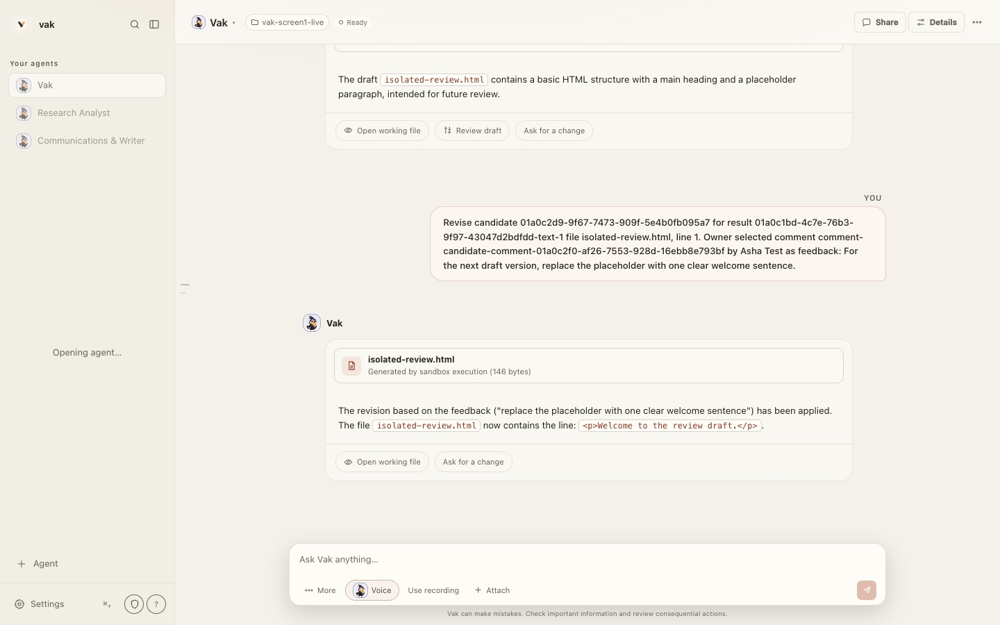
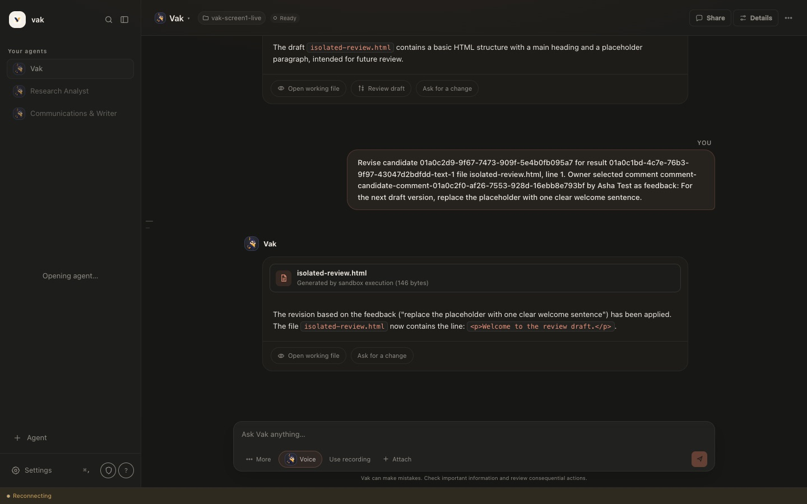
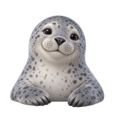
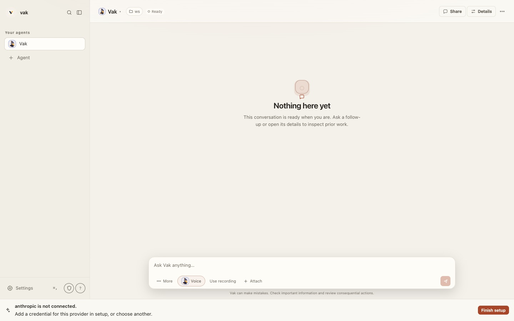

Design and brand reviewVak 4.0.2, desktop and web app25 September 2026
Vak Visual Refresh
Vak's structure already suits everyday people: one conversation per agent, results with clear next steps, and a review before anything changes. The layer on top is what feels technical. The text is small and flat, the words come from the codebase, machinery shows by default, and the brand pulls in four directions. This proposal replaces that layer and keeps every capability one click away.
Same conversation, same content. Switch to compare.
Vak
Your everyday agent
Share
You asked Vak to revise isolated-review.html using Asha Test's comment on line 1
For the next draft version, replace the placeholder with one clear welcome sentence.
Vak
The revision based on the feedback ("replace the placeholder with one clear welcome sentence") has been applied. The file isolated-review.html now contains the line: <p>Welcome to the review draft.</p>.
Isolated Review DraftWelcome to the review draft.
Draft, version 2, waiting for your review
isolated-review.html
Web page · made just now · your folder hasn't changed yet
Review changesOpenAsk for changes
Ask Vak anything…
Vak can make mistakes. Check anything important.


Sidebar. The wordmark gets a display face. Each agent has its own character and a one-line status. Search is a row instead of an icon.
Header. A larger character and name. The folder chip and the Ready chip move into Details; status appears only when something is wrong.
Revision request. Asha's comment shows as an event with the file and quote, instead of a message full of IDs.
Answer. The model's own text, unchanged, set at 16px on the page. Only the result is a card, with a preview, the version and three clear actions.
Message box. One field. The + menu holds attach, mention and skills; the mic is the voice button; model and permissions move to the agent menu.
Colour. Indigo for actions, saffron only for live states. Here it marks the draft that is waiting for you.
Five moves, in priority order
1Bigger, calmer typeConversation text at 16px, controls at 14px, nothing under 12px, and the brand's Newsreader serif for names and titles. Today almost all text sits between 9.5px and 13.3px.
2Plain wordsRewrite about 130 interface strings that use engineering terms. The precise terms stay available under Technical details.
3Technical details off by defaultOne switch controls folder chips, IDs, file sizes, sandbox labels, the Developer menu and the technical Settings pages. Developers turn it on once.
4One brand: Ink and SaffronIndigo ink and saffron, taken from the logo and the name, on a lighter paper. Terracotta, which makes Vak look like Claude, retires. Decided on 25 September 2026.
5Smooth edgesFix 15 visible bugs and slow loading states, including a first-run screen that tells new users to inspect prior work.
How this was reviewed. I ran the current dev build (4.0.2, commit acca0c88) with your real configuration: Shared config, your three agents and the local Ollama model. A second copy with an empty home showed first run. Every main screen was captured at 1440 × 900 and 390 × 844, in light and dark, and I read DESIGN.md, docs/brand/README.md, design docs 70 and 71, and styles.css. The desktop app loads the same client bundle, so the findings apply to both; desktop-only notes are marked. Not covered: the public website (as you asked), voice in use, and the admin console beyond its setup page. Timings come from an unoptimised debug build.
Diagnosis
Why it feels technical
Six causes, from the deepest to the most visible. Click any screenshot to see it full size.
1. Two design systems are competing
DESIGN.md still names its north star "The Auditor's Desk": dark first, dense, a 13px body, font weights such as 540 and 620, and monospace for anything shaped like a receipt. It describes an instrument for a practiced hand. Doc 70, the direction you approved, says most users are not developers and asks the interface to conceal machinery until it helps a decision.
The stylesheet shows the result. Calm passes were added on top of the old base instead of replacing it. Outside media queries, 144 selectors are defined two or more times and 35 are defined three or more times; .sidebar, .msg and .worker appear five times each. The file also carries 179 distinct hex values and 27 !important rules. Each pass adds overrides, so the old system keeps showing through.
Fix the source first. Rewrite the north star in DESIGN.md, replace the token layer, and delete the overrides it supersedes in the same change. That is invariant 30, one canonical way, applied to CSS.
2. Text is small and flat
Visible text on the conversation screen, by font size
Share of the 1,753 visible characters, measured in the running app at 1440 × 900, light theme
9.5 to 10.5px8%
11 to 11.9px17%
12 to 12.5px19%
13 to 13.5px56%
14px and up0.2%
Show the data table
Size
Characters
Share
Where
9.5px
84
4.8%
Disclaimer under the message box
10px and 10.5px
59
3.4%
Section labels, small chips
11px and 11.5px
226
12.9%
Toolbar labels, captions
11.9px (monospace)
75
4.3%
Inline code and file names
12px and 12.5px
332
18.9%
Buttons, result actions
13px
129
7.4%
Your message, sidebar
13.26px
842
48.0%
Answer text
13.5px and 15px
6
0.3%
Wordmark, agent name
44% of the visible characters are smaller than 13px. The answer is 13.26px, the disclaimer under the message box is 9.5px, and section labels are 10px capitals. The largest text on the screen is the 15px agent name. With every size within a few pixels of every other, nothing leads the eye, and the screen reads like a settings panel instead of a conversation.
3. The words come from the codebase
About 130 interface strings use engineering terms: workspace, session, provider, sandbox, ledger, receipt, frozen, candidate, execution, token. A few, exactly as they appear today:
Agent Fleet & Working Target. Select an autonomous persona or point to an execution directory.Agent picker, opened from the agent name
Generated by sandbox execution (146 bytes)Every file result
Applied changes take effect for new tasks. Existing tasks retain their frozen provider/model contract.Settings, Model & Provider
How long a successful tool receipt remains fresh for outcome verification.Settings, Evidence freshness
Doctor parity: health checks, runtime facts, frozen ladderSettings, Services
anthropic is not connected. Add a credential for this provider in setup, or choose another.The first thing a new user reads
Goal mode armed (docs/design/27 Phase H)A tooltip in the message box that cites a design document
A coworker's comment turned into a revision request shows up as your own message, IDs and all:
The runtime writes this text for the model. The chat should show a typed revision event, never the text itself.
4. Machinery is on the first screen
A first-time user sees the folder name and a Ready chip in the header, four text buttons under the message box, and a More menu that holds a model picker and a permission picker. The … menu has 13 items, most of them developer tools. Results show monospace file names and byte counts. Details shows .vak/scratch/vak/call_fe1z30qg/isolated-review.html, and Canvas labels its preview with 100%, 768px, 375px and "Sandboxed · net: blocked".
Header: folder chip and Ready chip on every screen.Message box: four text buttons and a 9.5px disclaimer.Canvas: PREVIEW badge, scratch path, widths in pixels.
The … menu: 13 items. Background tasks uses a letter W as its icon.Details: two rows of tabs, MIME type, bytes and a scratch path.Agent picker: fleet language, monospace IDs, the same bird three times.
5. The brand pulls in four directions
Four colour stories meet on one screen. The logo is navy and saffron. The mascot and companions are glossy 3D renders. The interface accent is terracotta on cream, or terracotta on brown-black in dark mode. The approved reference screens use deep green and a serif. Even docs/brand/README.md lists terracotta as "the one accent on paper" and sage green for primary buttons, beside the navy and saffron of the mark.
At 22px the 3D portraits blur, and all three of your agents use the same bird, so the sidebar list has no identity. The wordmark is a lowercase "vak" in 13.5px system bold. The app icon is an opaque beige square with a smaller tile drawn inside it, so the Dock shows a square around a tile around a small V. Cream with a clay-orange accent is also the look people associate with Claude's own app, and one that many AI products now share, so Vak reads as one of them.
Logo and app icon
Navy and saffron mark. The opaque beige background fills the canvas, and the tile covers about half of it.
Interface accent
Terracotta #A8462A (light) and #DF795F (dark) on #F4F1EA cream or #171714 brown-black.
Characters, at 44px and at 22px

Charming at 44px. At 22px, the size the sidebar uses, they lose their faces.
Reference screens (doc 70)
Deep green #476A58 buttons on #FAF6F0, with a serif display. A fourth palette.
6. Rough edges break the calm
Smoothness is mostly the absence of small surprises. The review found fifteen, from a close button in the wrong corner to a first-run screen that tells new users to "inspect prior work". Three of them:
Share: the close button sits under the description, on the left.Review: a button overlaps the size and hash line.At 390px, the send button covers Attach.
The full list, with file locations, is under Fixes.
Brand
One brand: Ink and Saffron
Decided on 25 September 2026: direction A. The three directions that were considered are kept below for the record. Each card shows its palette on a sample header, status chip and buttons.
Vak
Listening
Review changes
Vak
Listening
Review changes
#101D3D#2F3C94#F5A400#F6F5F1#0F1120
A. Ink and Saffron Chosen
Vāk (वाक्) is Sanskrit for speech, the mascot is a songbird, and the logo is already navy and saffron. Indigo carries text and actions. Saffron marks the moments Vak is live: listening, speaking, working, or waiting for you. Paper is lighter and less yellow than today, and dark mode becomes indigo night instead of brown-black.
Matches the logo and mascot with no redraw.
Clearly different from Claude, ChatGPT and Gemini.
Gives voice a colour of its own.
Cost: a new palette across the app; terracotta retires.
VakListening
Review changesOpen
The rounding issue is fixed in a draft.
#22261F#476A58#E4EBE3#FAF6F0#EDE8DF
B. Sage and Paper
The palette of the four reference screens: deep green actions on cream with a serif display. Calm, and already approved as imagery.
Closest to the images in doc 70.
Cost: the logo and mascot need recolouring to match.
Cream with a serif stays close to the look many AI products share.
VakListening
Review changesOpen
Today's palette, with bigger type and plain words.
#23211C#A8462A#DF795F#F4F1EA#171714
C. Refined terracotta
Keep today's accent and apply the type, words and modes from this proposal.
The least work.
Vak keeps looking like Claude.
The logo and mascot still clash with the interface.
What the brand rules already say, and what changes
The mark stays whole
docs/brand/README.md says the logo tile is never split, recoloured or given light and dark variants. The proposal keeps that: the sidebar shows the complete tile. What changes is the file. The master has an opaque beige square around the tile, so it only looks right on #F4F1EA. A transparent-background export of the same artwork fixes the Dock icon and dark mode without touching the mark.
One accent per composition
The README's rule survives with a new meaning. Indigo is the ink: text, buttons, links, selection. Saffron (#F5A400, the mark's own) is the one accent, and it means live. The palette table in the README changes in the same step: terracotta and sage green leave, indigo joins.
A universal line
The README's product tagline, "An agent you can inspect, constrain, and extend", is a developer's line, and the same README says never to frame Vak as developer-only. Lead with the campaign line, "Ask. Then go live your day.", in the product and onboarding, and keep the technical line for developer docs.
System
The proposed system
Direction A, written as tokens. This page uses it, so switching your theme shows both halves. Every text pair below passes WCAG AA; the ratios were computed, not estimated.
Colour
Token
Light
Dark
Use
Contrast
paper
#F6F5F1
#0F1120
Window background
ground
surface
#FFFFFF
#171A2B
Cards, message box, sheets
ground
sidebar
#EFEEE8
#13162A
Sidebar and settings navigation
ground
line
#E3E1DA
#2A2E47
Dividers, only where spacing cannot separate
non-text
ink
#1B1E36
#ECEBF5
Text
15.0 / 15.9
ink-2
#474B66
#BDBFD3
Secondary text
7.8 / 9.5
ink-3
#5F6380
#9295AE
Captions, hints, placeholders
5.4 / 5.9
primary
#2F3C94
#4B59C9
Buttons, selection. White text on it.
9.6 / 5.9
link
#2F3C94
#A3ADF7
Links and text buttons
8.8 / 8.1
saffron
#F5A400
#F5A400
The one accent, for live states only: listening, speaking, working, needs you. A fill, never text on light.
ink on it 7.9
success
#2E6B4A
#7CC39A
Passed checks, applied changes. Always with an icon and a word.
6.3 / 8.3
danger
#A33A3A
#F08A8A
Failures, destructive actions
6.5 / 7.1
Indigo is the ink
Text, buttons, links and the selected item. Nothing decorative uses it.
Saffron is the one accent, and it means live
It fills the mic while listening, the dot while an agent works, and the badge when Vak is waiting for you. Because nothing else uses it, a glance tells you whether Vak needs you.
Four themes
Match system, Light, Dark and High contrast. Warm dark, Sage, Paper, Mist and Dawn retire, and the new Dark takes Midnight's place: each extra palette needs its own contrast calibration and none changes what the app can do.
Type
Display: Newsreader (decided)
The headline serif docs/brand/README.md already names. For the wordmark, agent names, page titles, the greeting and result headlines. Nothing else. Bundle it as WOFF2 (Latin and Latin Extended, SIL Open Font License); the desktop CSP already allows font-src 'self'.
Text: the system font
SF Pro on macOS, Segoe UI Variable on Windows. Native, crisp, free to render and already familiar to every user.
Code: the system monospace
Only for code and file contents. Never for file names, counts, versions or percentages in everyday screens.
Hero36 / 42 · display 500
Hi, I'm Vak.
Greeting28 / 34 · display 500
What can I help with today?
Page title22 / 28 · display 600
Appearance
Section18 / 26 · text 600
Your agents
Reading16 / 26 · text 400
The revision has been applied. The draft now opens with one clear welcome sentence.
Interface15 / 22 · text 400
Desktop notifications. Tell me when a task finishes while Vak is in the background.
Control14 / 20 · text 500
Review changes · Keep draft · Ask for changes
Meta13 / 18 · text 400
Made just now · Version 2
Caption12 / 16 · text 500
Vak can make mistakes. Check anything important.
Three weights (400, 500, 600) replace the eight in use today. Sentence case everywhere, with no capitalised micro-labels. Answers wrap at about 68 characters. The existing text-size preference keeps scaling all of it.
Shape, space, depth and motion
Shape and space
Radius 8 for controls, 12 for cards, 16 for the message box and sheets, full for avatars and pills.
A 4px grid: 4, 8, 12, 16, 24, 32, 48.
Sidebar rows 40px, buttons 36px, message box at least 56px.
Depth
Flat at rest, as today.
One soft shadow for the message box, which floats over the conversation. Result cards stay flat, as the brand rule "shadows only on things that float" asks.
Borders only where spacing cannot separate things.
Motion
120ms for hover and press, 200ms for menus and panels, 320ms for sheets. One curve: cubic-bezier(0.2, 0, 0, 1).
New messages fade up 6px; a result reveals once; skeletons replace loading text.
Nothing moves under the pointer, so the sidebar's 1px hover nudge goes. Reduced motion keeps working.
Icons, characters and voice
Icons
One line family at 20px with a 1.5px stroke: Lucide (ISC) or Phosphor (MIT).
Replace the letter glyphs in menus and empty states: W, @, /, ◌, ✓ and ✕.
Pick icons by meaning. Full access, the riskiest permission, uses a shield today.
Characters
Keep the 3D portraits for large moments at 64px or more: onboarding, empty states, agent creation, voice mode.
Commission a flat two-colour glyph per character, in the logo's style, for 32px and below.
Give every agent its own character. The creation templates already pair Research with Moss and Writer with Pip.
Serve 64 and 128px WebP copies. Today the app loads 512px portraits and 1024 × 512 atlases, 0.2 to 1 MB each, to draw 22px marks.
Voice and tone
Name things by what people recognise: your agents, folder, draft, changes, connections, AI service.
Buttons say what happens: Review changes, Keep draft, Apply 1 change.
Show numbers and IDs only when they help a decision.
Setup and error messages say what happened and what to do next, one sentence each.
Screens
Before and after
The mockups use real content and settings from the review session and change only what the interface controls. The conversation is at the top of the page.
First run
Vak
Needs an AI service
Hi, I'm Vak.
Ask a question, plan something or hand over a task. Talk or type, whichever is easier.
Connect an AI service to startVak needs a model to think with. It takes about a minute, and you can change it later.
Connect
Research a questionCompare three laptops under £800
Write or rewriteMake this email warmer and shorter
Analyze dataWhat changed in this spreadsheet?
Plan somethingA relaxed Saturday with the kids
Ask Vak anything…
Vak can make mistakes. Check anything important.

Welcome. A greeting from the mascot replaces "Nothing here yet" and its advice to "inspect prior work".
Setup in place. Connecting an AI service happens in the app. Today Finish setup opens the admin console's Setup & Readiness page.
Honest status. The header says Needs an AI service, in saffron, instead of Ready.
Starters. The four existing suggestions, each with an everyday example.
Where Finish setup leads today: "Verify host prerequisites, AI model dispatch, sandbox containment, and platform service registration."
Settings for an agent
Vak
Your everyday agent. Changes apply to new conversations.
Edit personality
AI modelgemma4:e2b-mlx through Ollama, running on this Mac
Change
HelpersVak can split big jobs across helpers that work in parallel
What Vak can do without asking
Look onlyRead and search this folder. Makes no changes.
Edit files in this folderAsks before anything sensitive.
Full access to this computerRuns any command and opens files outside this folder.
When to ask you
Every timePause for anything that needs approval.
Only outside this folderReading and editing here continue. Web and outside access still ask.
Don't askVak keeps going unless a rule requires your approval.
One header. The agent is named once. Three notices about editing, saving and frozen contracts become one line.
Outcomes, not modes. Look only, Edit files in this folder, Full access to this computer. Your current choices are kept: Full access and Don't ask.
Technical details. Turn limit, evidence freshness and context size move behind one row, with their values intact.
Navigation. Everyday pages first, then Agents, then one Advanced entry. On phones it becomes a list that opens each page.
Proposed navigation. Everyday: General, Appearance, Voice and sound, Notifications, Connections, Privacy and safety. Agents: one page per agent. Advanced, shown with technical details on: Models and routing, Reliability, Prompts, Services and health, Storage and backup.
Words
Plain words
A starting glossary. Each change is a string edit, and the precise term stays available under Technical details or in the admin console. A CI check can then fail on the old terms in user-facing strings, the same way vak-eval's banned-token gate works.
Where
Today
Proposed
Agent picker title
Agent Fleet & Working Target
Your agents
Agent picker subtitle
Select an autonomous persona or point to an execution directory.
Choose who to work with, or which folder they use.
Agent picker tabs
Fleet Roster (3) · Target Directory
Agents · Folder
Header
vak-screen1-live chip ("Project Working Directory")
Hidden. Shown in Details as Folder.
Your messages
YOU
No label. The alignment already says it.
File result
Generated by sandbox execution (146 bytes)
Draft · made just now
Result actions
Open working file · Review draft
Open · Review changes
Details panel
text/html · 164 B · .vak/scratch/vak/call_fe1z30qg/…
Web search (Tavily) · Connected · Used by all agents
Prompts
The narrowest layer that sets this wins.
This agent's version replaces the shared one.
Settings navigation
EXPERIENCE · THIS AGENT · ARCHIVED
Everyday · Agents · Advanced
Modes
Everyday by default, technical on request
One setting, Show technical details, decides how much machinery each screen shows. It changes presentation only and never what an agent may do. Doc 57 already defines Everyday and Advanced as two projections of one history; this applies that idea to the whole app.
Attach, mention a file, skills, upload a recording
Adds model and permission switches
Settings
Everyday and Agents pages
Adds the Advanced pages
Connection
A small pill above the message box, only after a few seconds without a connection
Adds a live connection indicator
Default it off for new installs. Ask once during onboarding ("Do you build software? Show technical details") and keep the switch in General. Developers turn it on in one click; nobody else meets a terminal they did not ask for.
Fixes
Fix list
Stages match the tracker in docs/plans/visual-refresh-plan.md. V0 records the decisions. V1 fixes what is broken and can ship first. V2 builds the foundation, V3 applies it to each surface, and V4 renews the brand assets. File paths are relative to crates/vak-client-ui/src unless noted.
V1. Fix what is broken
Small, one change each
#
What happens
Where
Fix
V1.1
New users never see the welcome. Opening an agent creates its conversation, so the empty state takes the "has session" branch: "Nothing here yet. Ask a follow-up or open its details to inspect prior work."
components/ChatPane.tsx, empty state
Show the welcome whenever the conversation has no turns.
V1.2
"Opening agent…" floats in the middle of the sidebar for about 3.5 s on load and 5.5 s when switching agents.
Full access, the riskiest permission, uses a shield icon; Workspace write and Approve automatically use a code icon.
components/Settings.tsx:1444, 1451 to 1453
Eye, pencil and warning icons.
V1.15
The agent picker marks the current agent with a filled CURRENT badge and repeats IDs in monospace.
components/AgentPickerModal.tsx
A check mark; IDs under Technical details.
V2. Foundation
Medium to large
Rewrite DESIGN.md: a new north star for the calm direction, the named rules above, and the old Auditor's Desk sections removed.
A new token layer (colour for Light, Dark and High contrast; type scale; spacing; radius; motion). Delete the old :root and theme blocks and every override they supersede, in the same change.
Bundle Newsreader as WOFF2 in vak-client-ui; conversation text to 16px; three weights.
The copy pass across about 130 strings, plus the CI check for old terms.
One disclosure setting, Show technical details, wired through the header, menus, results, review, message box and Settings. It replaces today's Transcript detail preference (Density in store.ts) instead of adding a second switch.
Delete dead styles, starting with the 21 .everyday-rail rules that no component uses.
V3. Surfaces
Large
Sidebar and header; conversation and result card; message box with + menu and mic.
Settings information architecture, with list-then-page navigation on phones.
Review as a sheet with the preview first; Canvas toolbar with device icons.
The in-app connect flow for AI services.
One sheet component for every dialog, so close, title and focus behave the same everywhere.
V4. Brand assets and desktop chrome
Medium
App icon and logo files: a transparent-background export of the same master artwork, with the tile filling the macOS icon grid. The mark itself does not change.
Update docs/brand/README.md: the Ink and Saffron palette, Newsreader, and the campaign line as the product line.
Flat character glyphs for small sizes, and WebP copies at 64 and 128px.
Desktop only: an overlay title bar with the traffic lights inside the sidebar. In crates/vak-desktop/tauri.conf.json set "titleBarStyle": "Overlay", "hiddenTitle": true and "trafficLightPosition" (supported by the pinned Tauri 2.11), and add drag regions to the sidebar head and the header. Today the window uses the standard title bar, which makes the app look like a web page in a frame.
Decisions
Decisions
All five were locked on 25 September 2026. The tracker in docs/plans/visual-refresh-plan.md keeps the same list with their consequences.
Brand directionDecided on 25 September 2026: A, Ink and Saffron.
Display faceDecided: Newsreader, the headline serif the brand README already names, bundled as WOFF2.
Technical details defaultDecided: off for new installs, offered once in onboarding and kept as a switch in General. It replaces Transcript detail.
ThemesDecided: Match system, Light, Dark and High contrast. Warm dark, Sage, Paper, Mist and Dawn retire; the new Dark takes Midnight's place.
OrderDecided: V1 fixes and the V2 foundation first (DESIGN.md, tokens, type, words), then screens (V3), then brand assets and desktop chrome (V4).